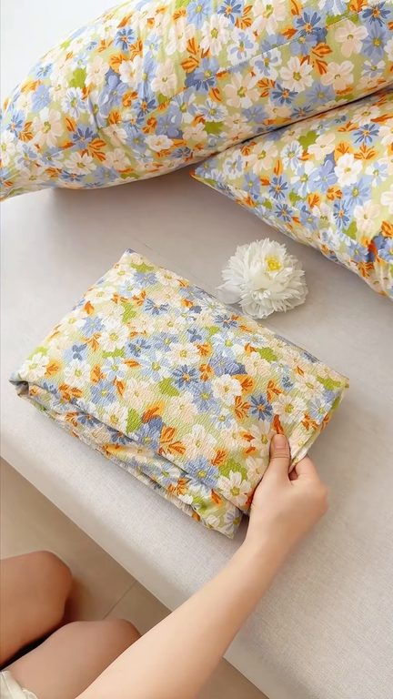
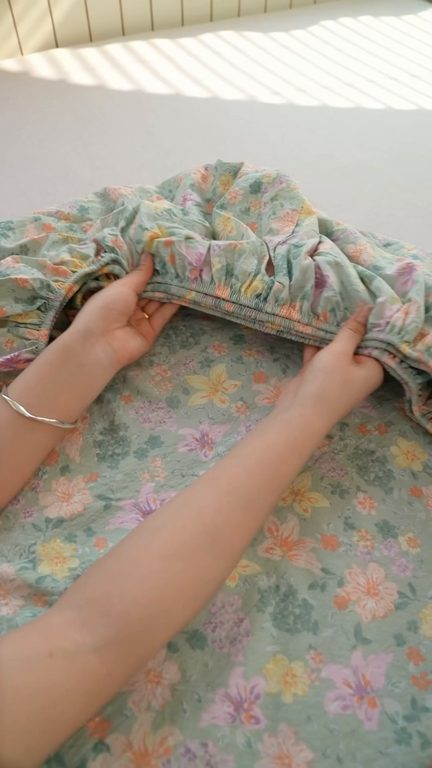
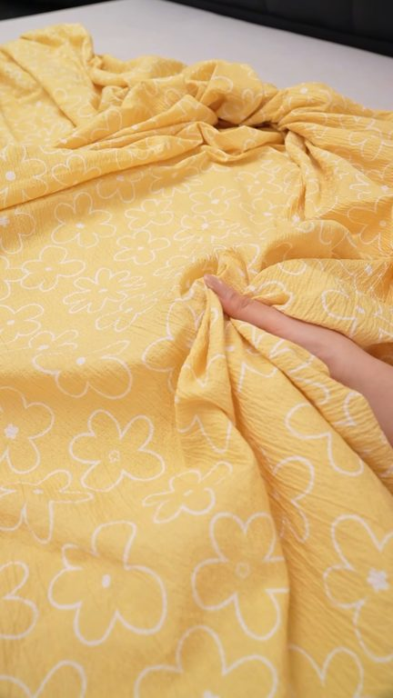
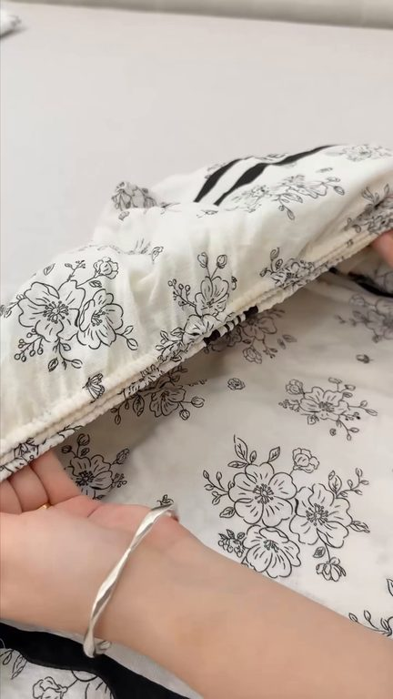

TOP 1 · 代表素材深度拆解
核心放量 稳健
视频为原始素材 HTTPS 链接；点击后加载，建议在网络环境良好时播放。
16.6万素材消耗
3.18%CTR
17.6%类目消耗占比
+0.21pp较类目均值
表现判断
该素材是类目内第 1 名，属于“核心放量”；CTR 高于类目均值。消耗体现承接规模，CTR 体现首屏与定向效率，两项应结合判断，不能仅以单指标下结论。
表达标签
口播三段式证据
开场钩子本来想再买一床这个床单但是听说拍一发三我一下子就买了四床我家的床单都是一周一换不是我有钱实在是这款双层杀床力太便宜了我一下就入手了四床这款床力底部一圈高弹力松紧带仅仅包裹在床垫上
中段论证云杆双层杀床力还送两个同款整套下面带有360度全包裹弹力绳不好后特别服贴就像被晕过的一样摸起来特别柔软细腻整个还是A类母嬴级别的小宝宝也能放心睡每一个花色都做得很不错超级治愈没有睡过的姐妹赶紧去试试本来想再买一床这个床单但我还是想试试这种服服贴贴的床力睡的才舒服套在入子上也不跑不滑那种睡醒就皱巴巴的床单真的很影响心情你们都赶紧去试试云杆双层杀床力还送两个同款…
结尾转化高弹力松紧带仅仅包裹在床垫上平平整整的隔脏又防沉脏了直接放洗衣机里面洗方便快捷又省事A类母婴级的面料健康安全又放心家里的床永远乱糟糟的以前铺十遍现在铺一遍就可以而且没想到几十块还送运费显底部一圈的松紧带可以牢牢套在床垫上铺在床上非常平整怎么折腾都不会乱
有效点
- CTR 3.18% 高于类目均值 2.97%，开场或人群指向具备点击优势
- 口播包含明确到手机制或直播间指令，转化路径较完整
迭代动作
- 重做前 3–5 秒：结果前置、缩短背景铺垫，并把核心人群直接写进首屏字幕
- 视频时长偏长，建议剪出 30–45 秒短版，仅保留钩子、两项证据和一次 CTA
- 促销口径与资质信息保持同屏可验证，结尾只保留一个明确行动指令
合规关注

钩子建立 · 5.2s

场景/问题展开 · 39.0s

卖点证据 · 89.6s

转化收口 · 123.4s
查看完整口播摘要
本来想再买一床这个床单但是听说拍一发三我一下子就买了四床我家的床单都是一周一换不是我有钱实在是这款双层杀床力太便宜了我一下就入手了四床这款床力底部一圈高弹力松紧带仅仅包裹在床垫上平平整整的隔脏又防沉脏了直接放洗衣机里面洗方便快捷又省事A类母嬴级的面料健康安全又放心谁都每天睡醒不用铺床的快乐家里还是用这种服服贴贴的床力睡的才舒服套在入子上也不跑不滑那种睡醒就皱巴巴的床单真的很影响心情你们都赶紧去试试云杆双层杀床力还送两个同款整套下面带有360度全包裹弹力绳不好后特别服贴就像被晕过的一样摸起来特别柔软细腻整个还是A类母嬴级别的小宝宝也能放心睡每一个花色都做得很不错超级治愈没有睡过的姐妹赶紧去试试本来想再买一床这个床单但我还是想试试这种服服贴贴的床力睡的才舒服套在入子上也不跑不滑那种睡醒就皱巴巴的床单真的很影响心情你们都赶紧去试试云杆双层杀床力还送两个同款整套下面带有360度全包裹弹力绳不好后特别服贴就像被晕过的一样摸起来特别柔软细腻整个还是A类母嬴级别的小宝宝也能放心睡每一个花色都做得很不错超级治愈没有睡过的姐妹赶紧去试试本来想再买一床这个床单但是听说拍一发三我一下子就买了四床用过的人都知道晚上睡觉特别舒服A类有氧双层杀的面料软弱轻肤近距离看看这质感洗完澡贴肤裸睡也很放心关键就现在这个价格还给我们带了晕费显呢可以放心拍回去感受一下我家的床单都是一周一换不是我有钱实在是这款双层杀床力太便宜了我一下就入手了四床这款床力底部一圈高弹力松紧带仅仅包裹在床垫上平平整整的隔脏又防沉脏了直接放洗衣机里面洗方便快捷又省事A类母婴级的面料健康安全又放心家里的床永远乱糟糟的以前铺十遍现在铺一遍就可以而且没想到几十块还送运费显底部一圈的松紧带可以牢牢套在床垫上铺在床上非常平整怎么折腾都不会乱